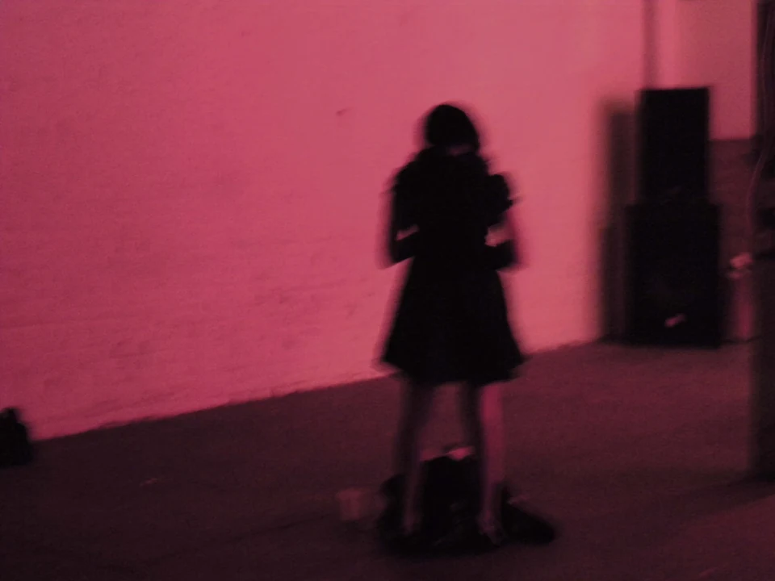
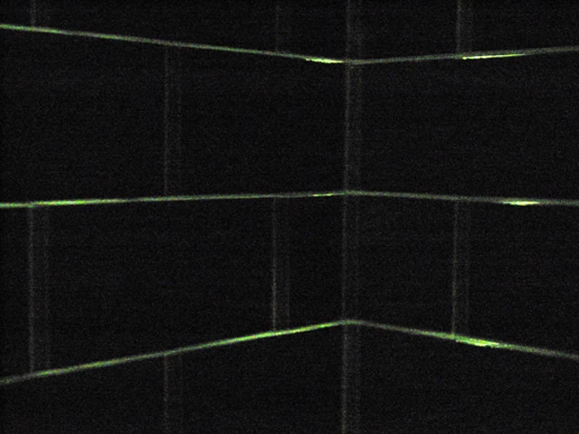
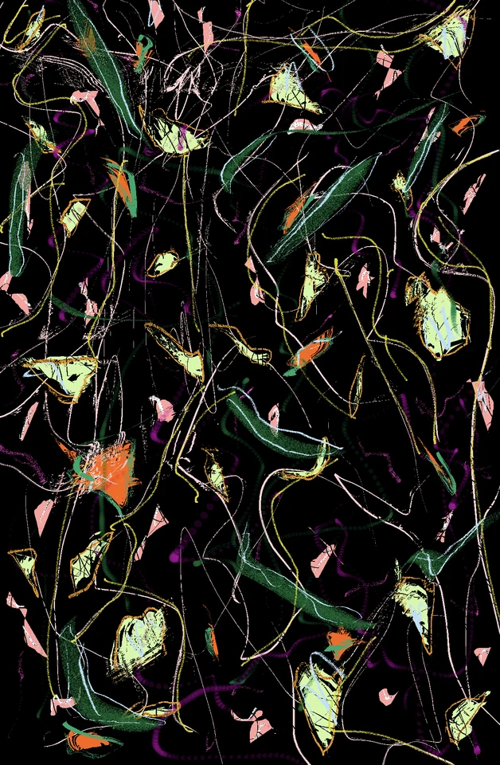
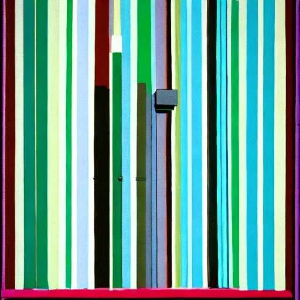
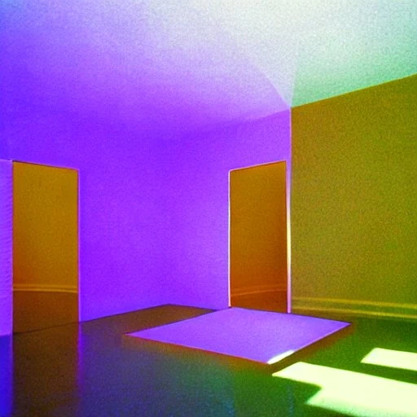

Processing Studies
Generative art / Processing
CF / Visual archive
Photography, drawings, surfaces, and uncertain spaces.
An edited archive, organized as collections. Open a series to follow its sequence.
Generative art / Processing

Color-inverted photographs

Photographs

Photographs

Digital drawings

Digital image studies

Digital image studies

Drawings and works on paper

Generative moving image / JavaScript

Collaborative installations / Project documentation